数学家大多喜欢魔术。魔术很有趣，常常也隐藏着有趣的理论。这里介绍一个经典的把戏，从中你也能欣赏代数的优点。首先选择任意三位数，第一位和最后一位应至少相差2，例如753。现在，把这个数字倒过来，我们得到357。用较大的一个数减去较小的一个数：753-357=396。最后，把这个数字和它自身倒过来之后的数相加：396+693，得到的和是1089。
再试一次，换个数，比如421。
421-124=297
297+792=1089
答案总是一样的。事实上，无论你以哪三位数开始，总会得到1089。这简直就是魔法，凭空变出来一个1089，好像随机选择数字的流沙中坚定屹立的一块石头。仅仅经过几次简单的运算，就可以从任何一个起点得到相同的结果，这有些令人费解，但也不是无法解释，我们很快就会说到。当问题是用符号而不是用数字写出的时候，反复出现的1089之谜几乎立刻被解开了。
虽然娱乐是数学发现的永恒主题，但只有当它作为解决实际问题的工具，数学才真正有了开端。莱因德数学纸草书可以追溯到约前1600年，是古埃及现存最全面的数学文献。它包含了84个问题，涉及测量、会计、如何将一定数量的面包分给一定数量的人等。
古埃及人会用修辞的方式来陈述他们的问题。纸莎草的第30题是，“如果抄写员说，是什么‘堆’让2/3+1/10等于10，让他听听”。“堆”是古埃及人表示未知量的术语，我们如今通常用x来表示，它是现代代数的基本符号。翻译成现在我们习惯的语言，上面这个问题是：x的值是多少，使2/3与1/10的和乘以x等于10。简而言之就是，（2/3+1/10）x=10，x等于多少？
因为古埃及人没有我们现在的符号工具，如括号、等号或x，他们通过反复试验解决了这个问题。他们估计了堆的大小，然后得到了答案。这种方法被称为试位法，很像打高尔夫球。只要你在果岭上，就更容易把球打进洞。同样，一旦你有了一个答案，即使是一个错误的答案，你也知道了如何接近正确答案。相比之下，现代的求解方法则是将方程中的分数与变量x结合起来，也就是：
（2/3+1/10）x=10
即
（20/30+3/30）x=10
进一步有
（23/30）x=10
简化得到
x=10（30/23）
最终，
x=300/23
可见，符号让生活变得更简单了。
古埃及象形文字中的加号是
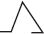
，像两条从右向左行走的腿。减号是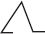
，也就是从左向右走的两条腿。随着数字符号从计数槽演变为数字，用于算术运算的符号也随之演变。尽管如此，古埃及人没有发明代表未知量的符号，毕达哥拉斯和欧几里得也没有。对他们来说，数学的本质是几何，与可以构建出的东西有关。未知量需要进一步的抽象思维。第一位引入未知量符号的古希腊数学家是丢番图，他使用了希腊字母ς。对于未知数的平方，他用了ΔY 来表示；对于三次方，他用KY 表示。他的符号在那个时代是一种突破，这意味着问题可以被更简洁地表达出来，但这些符号也令人困惑，因为和x、x2 和x3 不一样，ς、ΔY 和KY 之间看起来没有任何明显的联系。虽然他的符号有缺点，但他仍然作为“代数之父”而被人铭记。
丢番图生活在1世纪到3世纪间，住在亚历山大港。关于他的个人生活，除了下面的谜语外，没有其他记录。这个谜语出现在一个古希腊谜语集里，据说被刻在丢番图的坟墓上：
神允诺，他一生的六分之一时间是一个男孩；然后过了十二分之一时，他的面颊上就长了胡须；七分之一以后，他的婚姻之光被点燃；五年之后，又给了他一个儿子。唉！晚生的可怜的孩子，当他到了他父亲年龄的一半时，冰冷的坟墓就把孩子带走了。在用数字的科学安抚了他的悲痛四年后，他走到了生命的尽头。
这段话没有准确描述丢番图的家庭环境，只是赞扬了他所创造的符号带来的解决问题的新方法。这种新方法使人们可以清晰地表达数学句子，避免混乱的措辞，从而为新技术打开了大门。在我展示如何解决墓志铭上的问题之前，让我们先来看看这些新方法中的一些。
代数指关于方程的数学。在方程中，人们用各种符号表示数字和运算。“代数”（algebra）这个词本身有一段奇特的历史。在中世纪的西班牙，理发店的招牌上面会写着Algebrista y Sangrador，这个短语的意思是“接骨术和放血术”，这两项也曾是理发师的技能。（这就是为什么理发店的杆子上有红白相间的条纹，红色代表血液，白色代表绷带。）
Algebrista这个词的词根来自阿拉伯语的al-jabr，它除了指粗糙的外科技术外，还有修复或重新结合的意思。在9世纪的巴格达，穆罕默德·伊本·穆萨·花拉子米（Muhammad ibn Musa al-Khwarizmi）写了一本数学入门书，名为Hisab al-jabr w’al-muqabala，也就是《关于复原和削减的计算》。在书中，他解释了两种解决算术问题的技巧。花拉子米描述问题的原文使用了一些修辞方法，但为了便于理解，我们这里用现代符号和术语来表述这些问题。
考虑方程A=B-C。
花拉子米将al-jabr（复原）描述为让方程变为A+C=B的过程。换句话说，负项可以通过在等号的另一侧重置而变为正项。
现在，考虑方程A=B+C。
削减是指将方程变为A-C=B的过程。
在现代符号的帮助下，我们可以看到，复原和削减这两个过程其实是同一个一般规则的两个例子。这个一般规则是：不管你对方程的一边做什么，必须对另一边做相同的事情。在第一个方程中，我们把C加到两边。在第二个方程中，我们在两边减去C。因为根据定义，方程两边是相等的，当两边同时加上或减去一个额外的项时，两边依旧相等。因此，如果我们将一边乘以一个量，也必须在另一边乘以相同的量，这个规则同样适用于除法和其他运算。
等号就像一个篱笆，把两个激烈竞争的家庭的花园隔开。无论琼斯一家对他们的花园做了什么，隔壁的史密斯家都要做完全一样的事情。
花拉子米并不是第一个使用复原和削减方法的人，丢番图也用过。当花拉子米的书被译成拉丁文时，书名中的al-jabr变成了algebra（代数）。花拉子米的代数书，连同他写的另一本关于印度十进制的书，在欧洲被广泛传播，于是，他的名字和一个科学术语永远连在了一起：Al-Khwarizmi后来成了Alchoarismi、Algorismi，并最终成为algorithm（算法）。
从15世纪到17世纪，数学语言从修辞性表达转变为符号性表达。慢慢地，字母代替了单词。丢番图可能是从ς起，使用字母符号代替数量的第一人，但首个有效推广这一做法的是16世纪的法国人弗朗索瓦·维埃特（François Viète）。维埃特建议用大写的元音字母A、E、I、O、U和Y表示未知量，用辅音字母B、C、D等来表示已知量。
在维埃特死后的几十年里，勒内·笛卡儿出版了他的《谈谈方法》。在书中，他把数学推理应用到人类的思维中。他起初怀疑自己所有的信念，在把一切剥离后，只剩下他存在的确定性。一个人不能怀疑自己的存在，因为思考的过程需要一个思想者的存在，这一论点在论述中被总结成“我思故我在”。这句话成为一句著名的格言，这本书也被认为是西方哲学的基石。但笛卡儿原本是打算把它作为其他三本科学著作的附录的引言的。其中一本著作是《几何学》，它也是数学史上的一个里程碑。
笛卡儿在《几何学》中介绍了标准代数的表示方法。这是第一本与现代数学书高度相似的书，里面有a、b和c以及x、y和z。笛卡儿决定用字母表开头的小写字母表示已知量，用字母表结尾的小写字母表示未知量。然而，在印刷时，印刷厂的字母不够用了。于是印刷厂问他，x、y或z用哪一个是否要紧。笛卡儿回答不要紧，所以印刷者选择只用x，因为它在法语中的使用频率低于y或z。结果，x成了数学和更广泛的文化中表示未知量的符号。这就是为什么超自然事件被归类在X档案中，以及为什么威廉·伦琴提出了“X射线”这个术语。如果不是因为印刷字母有限，“Y-factor” [1] 可能会成为描述无形的明星气质的短语，而美国非裔政治领袖可能名叫“马尔科姆·Z” [2] 。
借助笛卡儿发明的符号，一切修辞的痕迹都被抹去了。
1494年，卢卡·帕乔利（Luca Pacioli）表述的方程是：
4 Census p 3 de 5 rebus ae 0
而到了1591年，维埃特会写成：
4 in A quad-5 in A plano+3 aequatur 0
1637年，笛卡儿把它变成：
4x2 -5x+3=0
用字母和符号代替单词比速记更方便。符号x最初可能是未知量的缩写，但它被发明后，就成了有力的思考工具。单词或缩写都不能像x这样，直接被用作数学运算。数字使计数成为可能，但字母符号把数学带入了一个远超语言的领域中。
当问题以修辞方式被表述出来时，比如在埃及，数学家会用巧妙但随意的方法来解决它们。这些早期的问题解决者就像被困在雾中的探险家，几乎没有什么工具可用。然而，用符号来表达问题后，雾气就消散了，出现了一个被准确定义的世界。
代数的奇妙之处在于，一旦使用符号重新表述一个问题，往往它就离被解决非常近了。
例如，让我们重新看一看丢番图的墓志铭。他死的时候几岁？我们用字母D代表他去世时的年龄，再来翻译这段话。墓志铭上说的是，他在D/6岁时还是个男孩，又过了D/12年才长出面部的毛发，又过了D/7年才结婚。5年后，他有了个儿子，儿子活了D/2年。4年后，丢番图本人去世。所有这些时间间隔加起来就是D，因为D是丢番图活过的年数。所以：
D/6+D/12+D/7+5+D/2+4=D
这些分数的最小公分母是84，因此方程变成：
14D/84+7D/84+12D/84+5+42D/84+4=D
它可以被改写成
D（14+7+12+42）/84+9=D
即
D（75/84）+9=D
也就是
D（25/28）+9=D
将D移到等式的同一边，
D-D（25/28）=9
D（28/28）-D（25/28）=9
D（3/28）=9
最后得出，
D=9×28/3=84
也就是说，代数之父死于84岁。
我们现在可以回到本章开头的魔术了。我让你说出一个三位数，其中第一位和最后一位数至少相差2。然后我让你把这个数字倒过来，得到第二个数字。之后，用大数减去小数。所以，如果你选择的是614，倒过来就是416。然后，614-416=198。然后我让你把这个中间结果和它倒过来的数相加。在上面的例子中，也就是198+891。
和之前一样，答案是1089。它永远是1089，代数会告诉你这是为什么。不过，首先，我们需要找到一种方法来描述我们的主角，也就是一个三位数，其中第一位和最后一位的数字至少相差2。
想想614，它等于600+10+4。事实上，任何一个三位数abc都可以写成100a+10b+c（注意：这里的abc不是a×b×c）。所以，我们假设初始数字为abc，其中a、b和c都是一位数。为了方便起见，假设a比c大。
abc倒过来就是cba，它可以写成100c+10b+a。
我们要用abc减去cba，得出一个中间结果。所以abc-cba是：
（100a+10b+c）-（100c+10b+a）
两个带有b的项抵消了，结果是：
99a-99c，也就是
99（a-c）
在基本层面上，代数不涉及任何特殊的见解，只是对某些规则的应用，目的是应用这些规则，让表达式尽可能地简单。
99（a-c）这种写法已经简化到极致了。
因为abc中的第一位和最后一位数字至少相差2，所以（a-c）可以等于2、3、4、5、6、7或8。
所以，99（a-c）就是以下数字中的一个：198、297、396、495、594、693或792。我们不管选择哪一个数，只要我们用它减去它倒过来的数字，我们得到的中间结果就一定是上面7个数中的一个。
最后一步是把这个中间数加上它倒过来的数。
让我们重复一下刚才做过的事情，并把它应用到中间结果上。我们将中间结果命名成def，也就是100d+10e+f。我们要将def和把它倒过来写的数fed相加。仔细看看上面可能的中间结果，我们发现中央的数字e始终是9。另外，第一位和第三位数字加起来总是9，换句话说，d+f=9。所以，def+fed等于：
100d+10e+f+100f+10e+d
即
100（d+f）+20e+d+f
也就是
（100×9）+（20×9）+9即
900+180+9
说变就变！和是1089，谜底揭开了。
这个魔术的惊人之处在于，从随机选择的数字中，总能产生一个固定的数字。代数让我们看到了变戏法之外的东西，提供了一种从具体到抽象的方法，从追踪特定数字的行为转到追踪任意数字的行为。代数不仅在数学上是一个必不可少的工具，也给其他科学提供了不可或缺的方程语言。
1621年，丢番图的巨著《算术》的拉丁文译本在法国出版。新版重新点燃了人们对古代解题技巧的兴趣，这些技巧与更好的数字和符号相结合，开创了数学思想的新时代。令人困惑的表示更少了以后，问题被描述得更加清晰。生活在图卢兹的法官皮埃尔·德·费马是一位狂热的业余数学家，他在那本《算术》里讲述了自己的数字思考。费马在关于毕达哥拉斯三元数（任何一组能使a2 +b2 =c2 成立的三个自然数a、b和c，例如3、4和5）的旁边，用页边的空白处潦草地写下了一些注释。他注意到，找不到a、b和c，能满足a3 +b3 =c3 成立，也找不到a、b和c，使得a4 +b4 =c4 成立。费马在他的《算术》中说，对任何大于2的数字n，不可能存在a、b和c，满足方程an +bn =cn 。“我有一个绝妙的方法，可以证明这一点，但这里的空白太小了，写不下。”他写道。
即使在没有页边距限制的情况下，费马也从未给出任何证明，无论是绝妙的还是不绝妙的。他在《算术》中写下的笔记可能表明他证明过，或者他相信自己能证明，又或者他只是在挑衅。无论如何，他那“厚脸皮”的句子对一代又一代的数学家来说都是极好的诱饵。这一命题后来被称为费马大定理，它一直是数学界最著名的未解问题，直到1995年英国人安德鲁·怀尔斯（Andrew Wiles）破解了它。代数在这方面可以说非常谦逊，陈述问题的难易程度与解决问题的难易程度没有任何关系。怀尔斯的证明非常复杂，只有不到几百人能理解。
数学符号的改进使人们能够发现新的概念。对数是17世纪早期的一项极其重要的发明，它由苏格兰数学家、默奇斯顿城堡主人约翰·纳皮尔（John Napier）提出。事实上，他在神学上的工作更为著名。纳皮尔为新教写了一份辩护文章，他声称教皇是反基督者，并预言审判日将在1688年至1700年之间到来。晚上，他喜欢穿着长袍在城堡外踱步，以至于很多人都认为他是个巫师。他还在爱丁堡附近自家的大片土地上试验肥料，并提出了一些建造军事装备的想法，例如一辆“有可移动的勇气之嘴”的战车，可以“在各个方向上造成破坏”，还有一台“在水下航行”的机器，“装备有潜水员和其他攻击敌人的战略”——坦克和潜艇的前身。作为一名数学家，他推广了小数点的使用，并提出了对数（logarithm）的概念，用希腊语的logos（比率）和arithmos（数字）创造了这个术语。
对数的定义看起来令人望而生畏：一个数的常用对数（log）是该数被表示为10的幂时的指数。不要被这个定义吓到，其实对数的概念用代数的方式表示更容易理解：如果a=10b ，则a的对数为b。
所以，log 10=1（因为10=101 ）
log 100=2（因为100=102 ）
log 1000=3（因为1000=103 ）
log 10000=4（因为10000=104 ）
如果一个数是10的幂，它的对数就非常明显。但是，如果这个数不是10的幂呢？例如，6的对数是多少？假设6的对数是a，就是说当a个10相乘时，会得到6。然而，把10与自身相乘一定的次数后得到6，这似乎非常荒谬。你怎么能把10与自身相乘一个分数的次数？当然，想象在现实世界中这个概念意味着什么，可能是十分荒谬的，但是数学的力量和美在于，我们不需要在意代数之外的任何意义。
6的常用对数精确到小数点后三位是0.778。换句话说，当我们把0.778个10相乘后，就可以得到6。
以下是从1到10的对数列表，每个数精确到小数点后三位。
log 1=0
log 2=0.301
log 3=0.477
log 4=0.602
log 5=0.699
log 6=0.778
log 7=0.845
log 8=0.903
log 9=0.954
log 10=1
那么，对数的意义是什么？对数把较为困难的乘法运算，变成了较为简单的加法。更准确地说，两个数相乘等于把它们的对数相加。如果X×Y=Z，则log X+log Y=log Z。
我们可以用上面的表格来检查这个等式。
3×3=9
log 3+log 3=log 9
0.447+0.447=0.954
还有，
2×4=8
log 2+log 4=log 8
0.301+0.602=0.903
因此，可以用以下方法算出两个数字的乘积：将它们转换为对数，相加得到第三个对数，然后将此对数转换成对应的数字。例如，2×3等于多少？我们找到2和3的对数，分别是0.301和0.477，把它们相加，就是0.778。从上面的列表中看到，0.778就是log 6。所以，2×3的答案是6。
现在，让我们算出89乘以62。
首先，我们需要找到它们的对数。如今我们可以把数字输入计算器或搜索引擎来找到对数，然而，20世纪末之前，人们唯一的方法就是查阅对数表。89的对数是1.949（精确到小数点后三位），62的对数是1.792。
所以，两个对数之和是1.949+1.792=3.741。
对数为3.741的数字是5518，这是再次查对数表找到的。
所以，89×62=5518。
值得注意的是，我们为了计算乘法所做的唯一运算是一个相当简单的加法。
纳皮尔写道，对数可以帮助数学家避免“冗长的时间投入”和“大量乘、除、平方和立方运算”所造成的“失误”。纳皮尔的发明不仅可以把乘法变成对数的加法，还可以把除法变成对数的减法，把计算平方根变成对数除以2，把计算立方根变成对数除以3。
对数带来的便利使它成为纳皮尔那个时代最重要的数学发明，科学、商业和工业也受益匪浅。例如，德国天文学家约翰内斯·开普勒很快就用对数计算出了火星的轨道。最近有人提出，如果没有纳皮尔的新数字提供方便的计算，开普勒可能不会发现天体力学的三条定律。
在纳皮尔于1614年出版的《对重要的对数表的介绍》中，他使用的对数与现代数学中的略有不同。对数可以表示为任意数的幂，这个数被称为底数。纳皮尔的系统使用了一个十分复杂的底数1-10-7 （然后他把它乘以107 ）。纳皮尔同时代的英国顶尖数学家亨利·布里格斯（Henry Briggs）曾访问爱丁堡，祝贺纳皮尔的发现。布里格斯接着用以10为底数的对数来简化了系统，这也被称为布里格斯对数，或称常用对数，因为10一直是最受欢迎的底数。1617年，布里格斯出版了一份从1到1000的所有数字的对数表，精确到小数点后8位。1628年，布里格斯和荷兰数学家阿德里安·弗拉克（Adriaan Vlacq）将对数表扩展到100000，并进一步精确到小数点后10位。他们的计算涉及繁重的数字运算，不过，一旦得到正确的结果，就再也不需要这样的计算了。
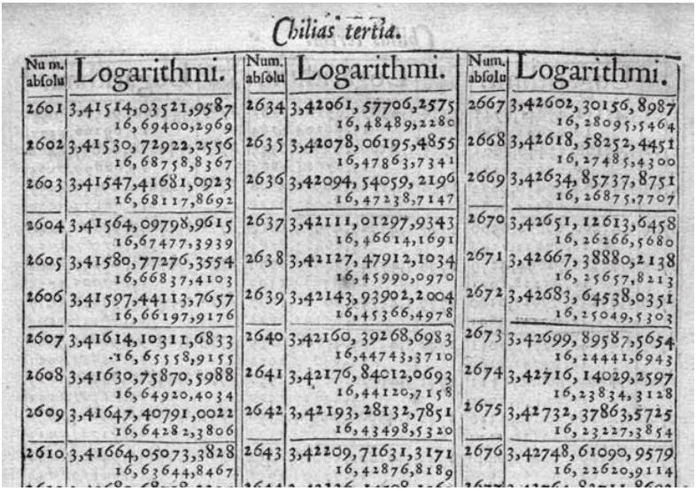
图5-1 1624年布里格斯出版的对数表中的一页
1792年，年轻的法兰西共和国雄心勃勃地决定制作新表格，其中包含100000以内每个数的对数，精确到小数点后19位，以及100000到200000每个数的对数，精确到小数点后24位。该项目负责人加斯帕尔·德普罗尼（Gaspard de Prony）声称，他可以“像制造别针一样轻松地制造对数”。他的团队有近90位计算师，其中许多是从前的佣人或假发造型师，他们在革命前的技能在新政权中已经用不上了（如果没有叛国的话）。大多数计算都是在1796年完成的，但那时政府对新的对数表已经失去了兴趣，德普罗尼宏大的手稿从未出版过。今天，它被保存在巴黎天文台。
布里格斯和弗拉克的对数表在300年间一直是所有对数表的基础，直到1924年英国人亚历山大·J. 汤普森（Alexander J. Thompson）开始手动计算一份精确到20位的新版本。然而，汤普森的作品在1949年完成时已经过时了，并没能给这个古老的概念带来现代的光泽，因为那时的计算机可以很容易地生成对数表。
将数字1到10的对数值绘制在一个标尺上，将得到以下规律：
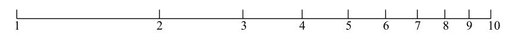
我们可以这样继续下去，比如到100。
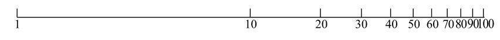
这就是对数刻度。在对数刻度上，数字越大，它们之间的距离就越近。
对于一些含有对数刻度的标尺，你在尺上每走一个单位，它所测量的量就会发生10倍的变化。（在上面的第二条标尺上，1到10之间的距离和10到100之间的距离是一样的。）例如，里氏震级是最常用的对数刻度，它测量的是地震仪记录的波的振幅。里氏7级地震触发的振幅是里氏6级地震的振幅的10倍。
1620年，英国数学家埃德蒙·冈特（Edmund Gunter）成为第一个在尺子上标出对数的人。他注意到，他可以通过延长这把尺子的长度来进行乘法计算。如果将圆规左边的针对准1，右边的针对准a，则当左边移动到b时，右边就会指向a×b。图5-2中表示，圆规被设置为2，然后左边移至3时，右边就对准了2×3=6。
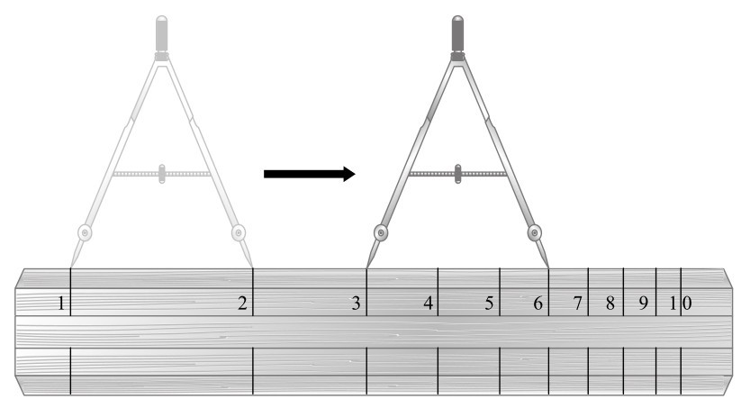
图5-2 冈特乘法
英国国教会牧师威廉·奥特雷德（William Oughtred）在不久后改进了冈特的想法。他没有使用圆规，而是把两个木制的对数尺放在一起，制造出了一种计算尺。奥特雷德设计了两种类型的计算尺，其中一种使用两把直尺，另一种使用带有两个游标的圆盘。不知出于什么原因，奥特雷德没有公布他的新发明。但是到了1630年，他的一位学生理查德·德拉曼（Richard Delamain）却抢先公布了。奥特雷德愤怒至极，指责德拉曼是个“小偷”，关于计算尺的起源之争一直持续到德拉曼去世。奥特雷德临终时抱怨道：“这件丑事给我带来了许多偏见和不利。”
计算尺是一种非常巧妙的计算机器，虽然它现在可能已经过时了，但仍然有人狂热崇拜着它。我拜访了其中一位——来自埃塞克斯布伦特里的彼得·霍普（Peter Hopp）。“从17世纪到1975年，每一项技术创新都是用计算尺发明的。”他在车站接我时这样说。霍普是一位退休的电气工程师，非常和蔼可亲，他的眉毛纤细，长着一双蓝色的眼睛，面颊饱满。他要带我去看他的收藏室，那是世界上最大的计算尺收藏室之一，其中包括1000多个被遗忘的英雄。在开车去他家的路上，我们聊了他的收藏。霍普说，最好的东西会直接在互联网上被拍卖，竞争不可避免地推高了价格。他说，为一把罕见的计算尺花上几百英镑很常见。
我们到他家后，他的妻子给我们沏了茶，然后我们来到他的书房。在书房里，他向我展示了一把20世纪70年代辉柏嘉牌的木制计算尺，上面有一层浅桃红色的塑料饰面。这把尺的大小和一把常规的30厘米尺差不多，但中间可以滑动。上面用很小的字标出了几个不同的刻度。它还有一个透明的可移动游标，上面标有一条细线。它的外形和感觉让人总是联想到一种出现在战后、计算机时代来临前的书呆子的形象——当时的极客们穿着衬衫、打着领带，口袋里插着笔夹子，不像今天的极客们穿着T恤、运动鞋，听着苹果随身听。
我在20世纪80年代上中学，那时的学生已经不再使用计算尺，所以霍普给我快速上了一课。他建议我，作为初学者，应该使用主尺上1到100的对数刻度，以及相邻的中间滑动部分的1到100的对数刻度。
使用计算尺（在美国也被称为滑尺）计算两个数的乘积，就是将标在一个刻度上的第一个数与标在另一个刻度上的第二个数对齐。你不需要了解对数是什么，只需要把中间的尺子滑动到正确的位置上，然后读出刻度就行。
例如，假设我想计算4.5乘以6.2。我需要将一把尺子上的长度设成4.5，而将另一把尺子上的长度设成6.2。将中间的尺上的1滑动到主尺上的4.5，那么中间尺6.2所对应的主尺上的点就是结果。图5-3展示了这一过程。
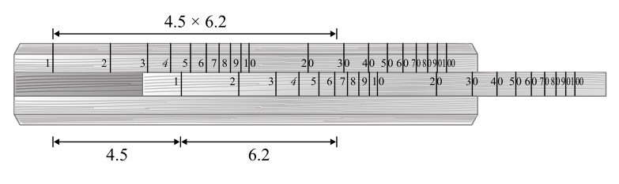
图5-3 如何用计算尺做乘法
使用这种细线游标，可以很容易地看到两个刻度相交的位置。顺着中间标尺上的6.2处，我可以看到它刚好位于略低于主尺28的位置，这就是正确答案。计算尺不是精密的机器。或者更确切地说，我们使用它们不是为了得到精确的结果。在计算尺上读数时，我们是在估算一个数字在模拟的刻度上约为多少，而不是找到一个清晰的结果。然而，尽管它们具有固有的不精确性，霍普说，至少在他做工程师时，计算尺对于大多数用途来说都已经足够了。
我用的计算尺上的对数刻度是从1到100的。也有从1到10的刻度，数字之间有更多空间，可以获得更高的精度。因此，使用计算尺时，最好通过移动小数点将原始数字转换为1到10之间的数字。例如，为了计算4576乘以6231，我要把它变成4.576乘以6.231。找到答案后，再把小数点向右移回6位。当我输入4.576，并与6.231对齐时，得到的数值为28.5左右，这意味着4576×6231的答案约为28500000。用上面的对数表计算出的准确答案是28513056。这是个不错的估计。通常，一把像辉柏嘉这样的计算尺能让你获得三位有效数字的精度，这也是通常需要的精度。我失去了准确度，但获得了速度，得出这个答案只花了不到5秒的时间，使用对数表要花上十倍的时间。
彼得·霍普最古老的藏品是一把18世纪早期的木制计算尺，税务人员用它来计算酒精的体积。在见到霍普之前，我一直不相信收集计算尺是一种有趣的消遣。邮票和化石至少可以很好看，但计算尺只是一种实用的工具。不过，霍普的古董计算尺很漂亮，精致的木头上精心雕刻着数字。
霍普的大量收藏反映了几个世纪以来人们取得的微小进步。19世纪，出现了新的比例尺。彼得·罗格（Peter Roget）为缓解自己的精神疾病，制作了永恒、经典且权威的同义词词典，他发明了重对数尺，可以计算32.5 等分数幂以及平方根。随着制造技术的进步，人们设计出了新颖、精密、美观的新设备。例如，撒切尔的计算仪器看起来像金属底座上的擀面杖，富勒教授的计算器（见图5-4）由三个同心的空心黄铜圆柱体和一个红木手柄组成。一条长41英尺（约12.5米）的螺旋线绕着圆柱，能提供5个有效数字的精度。霍尔登计算器看起来像一块怀表，由玻璃和铬钢制成。由此可见，计算尺确实具有惊人的吸引力。
我还在霍普的架子上发现了一个古怪的装置，它看起来像胡椒粉碎器，我问他这是什么。他说是库尔塔（Curta）。这是一个手掌大小的黑色圆柱体，顶部有一个手摇曲柄，这个独特的发明是人类制造出的唯一一台便携式机械计算器。霍普演示了它的使用方法，他转动手柄一圈，使机器复位到零。你可以通过调整库尔塔一侧的旋钮输入数字。霍普把数字设为346，转动手柄一次，然后他将旋钮重新设置到217。当他再次转动手柄时，机器的顶部就显示出了两个数字的总和563。霍普说，库尔塔还可以进行减法、乘法、除法和其他数学运算。他补充说，库尔塔过去很受跑车爱好者的欢迎。领航员可以通过转动手柄来计算驾驶时间，而不耽误盯着道路。它比计算尺更易于阅读，也不容易受到路上颠簸的影响。
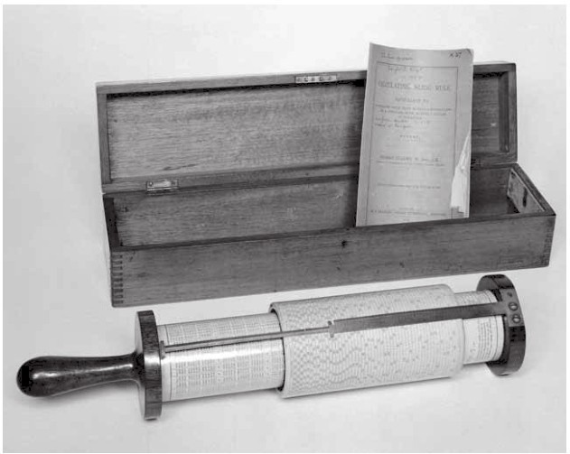
图5-4 富勒教授的计算器
尽管库尔塔不是一把计算尺，但它在计算上的独到之处使它受到数学仪器收藏家的喜爱。在使用它之后，它立即成为我最喜欢的霍普的藏品。这个工具可谓名副其实地“捣弄数字”——数字被输入，随着手柄的转动，结果就会出现。然而，对于一个由600个机械零件组成、能像瑞士手表一样精确移动的小器械来说，“研磨”出答案的说法太粗糙了。
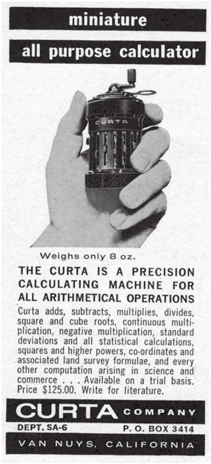
图5-5 1971年库尔塔的广告
更耐人寻味的是，库尔塔有一段特别戏剧性的历史。它的发明者库尔特·赫尔茨施塔克（Curt Herzstark）当时是布痕瓦尔德集中营里的一名囚犯，他在第二次世界大战的最后几年设计了这个装置的原型。赫尔茨施塔克是奥地利人，他的父亲是犹太人，作为一名众所周知的工程天才，他被特许制造计算器。赫尔茨施塔克被告知，如果他成功的话，这台计算器将作为礼物被送给阿道夫·希特勒。他也将被宣布是雅利安人，他的命也能保住。战争结束后，赫尔茨施塔克重获自由，他把完成的图纸折在口袋里，离开了集中营。在几次尝试寻找投资者未果之后，他最终说服了列支敦士登亲王。1948年，列支敦士登制造了第一台库尔塔。从那时起到20世纪70年代初，列支敦士登一共生产了大约15000台。赫尔茨施塔克一直住在列支敦士登的一间公寓里，1988年去世，享年86岁。
在整个20世纪50年代和60年代，库尔塔是唯一能够计算出精确答案的便携计算器。但是，库尔塔和计算尺几乎都因计算工具史上的一个事件而消失了，这个事件就像传说中灭绝了恐龙的陨石一样彻底清除了之前的计算器——电子便携计算器诞生了。
很难想到有其他东西像计算尺一样，在统治了如此长时间之后，又消失得如此之快。它统治了300年，直到1972年，惠普公司推出了HP-35。这台设备被称为“高精度便携式电子计算尺”，但它根本不像计算尺。它的大小相当于一本小书，有一个红色的LED（发光二极管）显示屏、35个按钮和一个开关。几年之后，除了二手的计算尺，已经买不到供日常使用的计算尺了，唯一买家就是收藏家。
尽管电子计算器“杀死”了他心爱的计算尺，但彼得·霍普并没有怨言。他也喜欢收集早期的电子计算器。当我们把话题转到电子计算器上面时，他向我展示了他的HP-35，并开始回忆他在20世纪70年代初第一次看到HP-35时的情景。当时，霍普刚刚开始在电子通信公司马可尼工作。他的一个同事买了一台HP-35，花了365英镑，这大约是当时一名初级工程师的一半年薪。“它很值钱，他把它锁在书桌里，从不让任何人使用。”霍普说。不过，这位同事还有另外一个要保密的原因。他相信自己找到了一种使用计算器的方法，可以节省公司1%的开支。“他与老板进行了绝密会谈。会上全是‘安静，安静’。”霍普说。但事实上，他的同事犯了个错。计算器并不是完美的工具，如果输入10除以3，你会得到3.3333333。但是，将结果乘以3后，你并不会回到开始的数，而是会得到9.9999999。霍普的同事利用数字计算器中的反常，凭空得出了一些结论。霍普笑着回忆起这件事：“同行用计算尺评审时，发现这些结论根本就不对。”
这个故事说明了霍普为什么会惋惜计算尺的消亡。计算尺为用户提供了对数字的直观理解，这意味着，在他读出答案之前，他就对答案有了大致的了解。霍普说，现在人们只需把数字输入计算器，对答案是否正确已没有任何感觉。
然而，数字电子计算器在很多方面改进了计算尺的不足。便携计算器更易使用，能给出更精确的答案。1978年时，它的价格已经跌到5英镑以内，这使它可以被大众所接受。
现在，计算尺已经消失了几十年，如果我告诉你现代世界事实上还有一种情况仍然普遍使用计算尺，你一定会感到十分惊讶。飞行员还在使用计算尺来驾驶飞机。飞行员的计算尺是圆形的，叫作领航计算尺，它可以测量速度、距离、时间、油耗、温度和空气密度。为了成为一名飞行员，你必须精通领航计算尺，这似乎非常奇怪，要知道现在驾驶舱使用的都是高端计算机技术。之所以要求掌握计算尺，是因为飞行员必须具备在没有机载计算机的情况下驾驶小型飞机的能力。驾驶最现代喷气式飞机的飞行员往往更喜欢使用领航计算尺。手边有一把计算尺意味着你可以很快算出估值，也可以更直观地了解飞行的数值参数。飞行员熟练使用17世纪早期的计算机器可以使得驾驶喷气式飞机更安全，这真是件有趣的事。
早期电子计算器的天文数字一样的价格使它们成为奢侈品。发明家克莱夫·辛克莱（Clive Sinclair）称他的第一件产品为“执行官”（Executive）。这种产品的一个营销理念是用艺妓来瞄准日本的高收入商人。经过一晚的娱乐后，艺妓会从她的和服下抽出一台辛克莱的执行官计算器，客户可以用它来计算账单。这样一来，客户就会觉得有必要买下它了。
随着价格的下降，计算器不仅被视为算术助手，而且成为一种玩法多样的玩具。1975年出版的《便携计算器游戏书》介绍了许多在这种高科技电子产品上可以进行的娱乐活动。“便携计算器对我们的生活来说是新鲜事物。5年前，它们还不为人所知，现在它们变得和电视机或高保真音响一样受欢迎。”书里说，“然而，便携计算器的不同之处在于，它们不是被动的娱乐设备，而是需要巧妙的输入和明确的使用目的。我们对便携计算器能做什么并不感兴趣，我们感兴趣的是，你用便携计算器能做什么。”1977年，畅销书《用你的电子计算器玩游戏》中介绍了一本字典，里面的单词只由字母O、I、Z、E、h、S、g、L和B构成，它们恰好是LED数字 、 和 倒过来的样子。其中最长的单词包括：
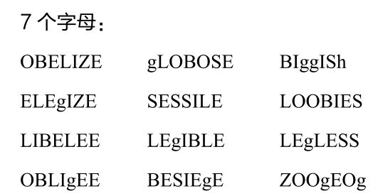
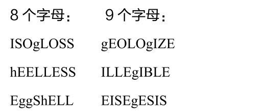
令人惊讶的是，这份列表里没有BOOBLESS这个词，这个词被十几岁的男孩用来形容平胸的女同学，可能是导致一代女孩放弃数学的原因。不过，《用你的电子计算器玩游戏》可能是唯一一本相比算术更能提高英语水平的书。
随着市场上出现更有趣的电子游戏，人们对玩计算器很快失去了热情。很快人们就明白，计算器不会激发人们对数字的热爱，倒是会产生反效果，导致心算能力的下降。
对数是由符号的进步而产生的一个全新发明，而二次方程则是一个被新符号装扮一新的古老数学主题。在现代符号中，我们所说的二次方程是这样的：
ax2 +bx+c=0，其中x是未知数，a、b和c是常数。
例如，3x2 +2x-4=0。
“二次”的意思是方程带有x和x2 ，主要涉及关于面积的计算。考虑古巴比伦泥板中的以下这个问题：一个面积为60个单位的矩形场地，它的一边比另一边大7个单位，场地的两边分别有多长？为了找到答案，我们需要画出问题的草图，如图5-6所示。问题简化为求解二次方程x2 +7x-60=0。
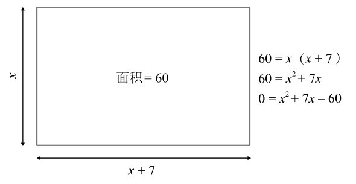
图5-6 场地的两边分别有多长？
二次方程的一个简便的特点是，它们可以用下面这个通用公式，代入a、b和c的值直接求解：
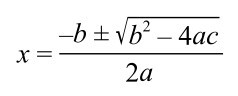
±表示有两个解，一个是来自取+的公式，另一个是来自取-的。在古巴比伦泥板的问题中，a=1，b=7和c=-60，两个解分别是5和-12。由于负解在描述面积时没有意义，所以答案是5。
除了分析面积外，二次方程也被用在其他计算中。物理学本质上诞生于伽利略·伽利雷关于物体下落的理论。据说，伽利略是通过从比萨斜塔上投掷铁球而发现的这个理论。他推导出，描述物体下落距离的公式是一个二次方程。从那时起，二次方程对于理解世界就变得非常重要，毫不夸张地说，它们是现代科学的基础。
即便如此，也并不是所有问题都可以归结为带有x2 的方程。有些需要x的更高一级的幂，也就是x3 。这些方程被称为三次方程，其形式为：
ax3 +bx2 +cx+d=0，其中x是未知数，a、b、c和d是常数。
例如，2x3 -x2 +5x+1=0。
三次方程经常出现在涉及体积的计算中，其中可能需要将固体的三个维度的大小相乘。尽管它们比二次方程只高出一级，但三次方程的求解要困难得多。二次方程在几千年前就被破解了，比如古巴比伦人在代数被发明之前就能够解出二次方程，但是在16世纪初，三次方程仍然超出了数学家的能力。所有这一切都在1535年发生了变化。
在文艺复兴时期的意大利，未知量，或者说x，被称为cosa，也就是“东西”。关于方程的学问被称为“东西的艺术”（cossick art），解决它们的专业人士是cossist，字面意思是“东西家”。他们不仅包括象牙塔中的学生，还有商人，他们用自己的数学技能开创了一个快速发展的商业阶层，这个阶层需要算术的帮助。进行有关未知量的计算充满着竞争性，和手工艺大师一样，“东西家”把他们最好的技术藏了起来。
尽管他们一直保密，但在1535年，一个谣言在博洛尼亚流传开，有人说两位“东西家”发现了如何解三次方程。对于解未知量的群体来说，这个消息非常令人兴奋。征服三次方程会使一个方程专家压过他的同行，让他可以收取更高的费用。
在现代学术界，如果你解决了一个著名的问题，你可以通过发表一篇论文公布，也可能在新闻发布会上公布。但在文艺复兴时期，“东西家”的方法是进行一场公开的数学决斗。
2月13日，博洛尼亚大学聚集了很多人，他们都前来观看尼科洛·塔尔塔利亚（Niccolò Tartaglia）和安东尼奥·菲奥雷（Antonio Fiore）的数学决斗。比赛的规则是，每人给对方出30个三次方程。每正确求解一个方程，解题者都会赢得一场由对手支付的宴会。
比赛以塔尔塔利亚的压倒性胜利告终。（他的名字的字面意思是“口吃者”，这是他因刀伤而获得的一个绰号，刀伤让他毁了容，并有了严重的语言障碍。）塔尔塔利亚在两小时内解出了菲奥雷提出的所有问题，而菲奥雷连一题都解不出来。作为第一位发现三次方程解法的人，塔尔塔利亚是欧洲所有数学家羡慕的对象，但他不愿告诉任何人他是怎么做到的。他也拒绝了吉罗拉莫·卡尔达诺（Girolamo Cardano）的请求，卡尔达诺可能是历史上最有故事的著名数学家之一。
卡尔达诺的本职是一名医生，以医术精湛闻名，他曾前往苏格兰治疗大主教的哮喘。他也是一位多产的作家。在他的自传中，他列出了131本印刷书籍、111本未印刷的书籍，以及170份他认为不够好而不愿出版的手稿。《安慰》汇编了他对悲伤之人的忠告，畅销整个欧洲，文学学者认为这本书就是哈姆雷特说出“生存还是毁灭”那段独白时手里拿着的书。卡尔达诺也是一位专业的占星学家，他声称发明了“相面术”，也就是根据面部的不规则特征解读性格。在数学方面，卡尔达诺的主要贡献是发明了概率理论，之后我会再讲到。
卡尔达诺急切地想知道，塔尔塔利亚是如何解出三次方程的，于是写了一封信给他，问他能否把他的三次解法加入卡尔达诺正在写的一本书中。塔尔塔利亚拒绝了，卡尔达诺再次询问，这次他保证不会告诉别人。塔尔塔利亚又一次拒绝了。
卡尔达诺不惜一切代价想要知道塔尔塔利亚求解三次方程的方法。他最终想出了一条诡计，他以介绍一位潜在的捐助人——伦巴第总督为借口，邀请塔尔塔利亚去米兰。塔尔塔利亚接受了邀请，但到了那里后，他发现总督不在城里，只看到了卡尔达诺。在卡尔达诺的“死缠烂打”下，塔尔塔利亚终于松了口，对卡尔达诺说，如果卡尔达诺不把公式告诉别人，就把公式告诉他。机灵的塔尔塔利亚故意用一种隐晦的方式写下了答案：一首奇特的25行诗。
尽管多了这层障碍，智慧的卡尔达诺还是破译了这个方法，他也几乎信守了自己的诺言。他只告诉了一个人这个解法，那就是他的私人秘书，一个叫洛多维科·费拉里（Lodovico Ferrari）的年轻男孩。结果证明，这带来了一个麻烦，不是因为费拉里轻率地说了出去，而是因为他改进了塔尔塔利亚的方法，从而找到了一种解四次方程，也就是包含x4 的方程（例如，5x4 -2x3 -8x2 +6x+3=0）的解法。当一个二次方程与另一个二次方程相乘时，就可能会出现一个四次方程。
卡尔达诺陷入了两难境地——他无法在不违背与塔尔塔利亚的约定的情况下，发表费拉里的发现，但他也不能否认费拉里的功劳。最后，卡尔达诺想到了一条聪明的办法。他后来发现，在与塔尔塔利亚的决斗中落败的安东尼奥·菲奥雷是知道如何解三次方程的，菲奥雷从一位年长的数学家希皮奥内·德尔费罗（Scipione del Ferro）那里学到了这个方法，德尔费罗在临终前告诉了菲奥雷。卡尔达诺在接近德尔费罗的家人，并浏览了这位已故数学家未发表的笔记后，发现了这一点。因此，卡尔达诺认为公布结果在道德上是正当的，他认为德尔费罗才是最初的发明者，而塔尔塔利亚是再发明者。这一方法被收录在卡尔达诺的《伟大的艺术》（Ars Magna）中，这本书是16世纪最重要的代数著作。
塔尔塔利亚没有原谅卡尔达诺，在愤怒和痛苦中死去。然而，卡尔达诺活到了近75岁。他于1576年9月21日去世，他在数年前曾通过占星预测自己会在这天死去。一些数学史学家认为卡尔达诺当时的健康状况很好，他为了确保自己的预言成真，服毒自杀。
除了把方程中的x的幂越升越高，我们也可以通过添加第二个未知数y来增加复杂性。在学校学习的代数中最常见的就是联立方程，它通常是求解两个方程，每个方程都有两个变量。例如：
y=x
y=3x-2
为了解这两个方程，我们用一个方程中变量的值，来代替另一个方程中的值。在这种情况下，由于y=x，那么：
x=3x-2
这可以简化为2x=2
所以x=1，且y=1
我们也可以通过观察来理解任何带有两个变量的方程。画一条水平线和一条与之相交的竖直线。将水平线定义为x轴，将竖直线定义为y轴。两轴的交点在x轴和y轴上对应的数值都设为0。平面中任何点的位置都可以通过参考两个轴上的点来确定。位置（a，b）定义为，通过x轴上a点的竖直线与通过y轴上b点的水平线的交点，见图5-7。
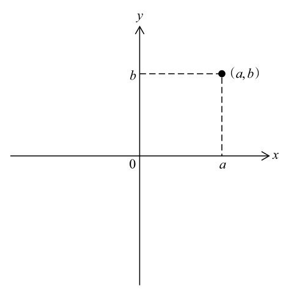
图5-7 用两个数来表示二维平面上的点
对于任何带有x和y的方程，满足该方程的x值和y值形成的点（x，y）在图上会形成一条线。例如，点（0，0）、（1，1）、（2，2）和（3，3）都满足上面的第一个方程y=x。如果我们在图上标记下（或者说画出）这些点，就能很清楚地看到，方程y=x产生了一条直线，如图5-8（左）所示。同样，我们可以画出第二个方程y=3x-2。通过为x赋值，然后计算出对应的y，我们可以得到点（0，-2）、（1，1）、（2，4）和（3，7）都在方程所描述的这条线上。这也是一条直线，与y轴在-2处相交，如图5-8（右）所示：
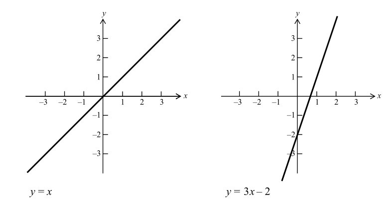
图5-8 表示直线的方程
如果我们将一条线叠加在另一条线上，会看到它们在点（1，1）处相交。因此，我们可以看到，联立方程的解就是这两个方程描述的两条直线的交点的坐标。
线可以表示方程的想法是笛卡儿《几何学》的主要创新。笛卡儿坐标系具有革命性的意义，因为它在代数和几何学之间开辟了一条此前尚未有人探索的路。他首次揭示出两个独立而不同的研究领域不仅相互联系，而且彼此都可以用对方表示出来。笛卡儿的动机之一是让代数和几何学更容易理解，因为正如他所说，两者可以独立地“延伸到非常抽象的事物，似乎没有实际的用途，（几何）总是与观察图像联系在一起，它严重依赖想象力才能理解，而……（代数）受某些规则和数字的支配，已成为一门压抑思维的混乱而晦涩的艺术，而不是一门培养思维的科学”。笛卡儿不喜欢用力过度。他是历史上著名的晚起者之一，只要没别的事情都会在床上躺到中午。
笛卡儿将代数和几何结合了起来，这也是抽象思维和空间图像相互作用的一个有力例子，这一相互作用是数学中反复出现的主题。代数中许多最令人印象深刻的证明，例如费马大定理的证明，都依赖于几何。同样，2000年前的几何问题在用代数的方法描述之后，又获得了重生。数学最令人兴奋的一个特点是，看似不同的主题以独特的方式相互关联，而这本身又引导出充满活力的新发现。
1649年，笛卡儿搬到了斯德哥尔摩，成为瑞典女王克里斯蒂娜的私人家教。女王是个爱早起的人。笛卡儿既不习惯斯堪的纳维亚的冬天，也无法适应早上5点起床，他到那里后不久就患上肺炎去世了。
笛卡儿关于x和y的方程可以写成直线的见解，最明显的推论之一是，不同类型的方程会产生不同类型的线。我们可以分类如下：
像y=x和y=3x-2这样的方程，其中仅有x和y，它们表示的都是直线。
相比之下，带有二次项（包括x2 或y2 ）的方程，总是产生以下4种曲线：圆、椭圆、抛物线、双曲线。
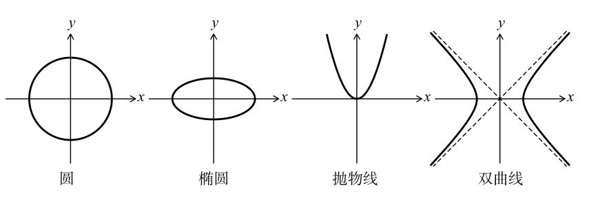
图5-9 带有二次项的方程表示的图形
圆、椭圆、抛物线和双曲线都可以用带有x和y的二次方程来描述，这对科学很有帮助，因为所有这些曲线都是在现实世界中被发现的。抛物线是描述物体在空气中飞行轨迹的形状（在忽略空气阻力、假设重力场均匀的情况下）。例如，当足球运动员踢出一个球时，它会沿着抛物线运动。椭圆是描述行星绕太阳公转的曲线的形状，而一天中日晷顶端的阴影所遵循的路径是双曲线。
想象以下二次方程，它就像一台描绘圆和椭圆的机器：
x2 /a2 +y2 /b2 =1，其中a和b是常数
这台机器有两个旋钮，一个是a，一个是b。通过调整a和b的值，我们可以创建任何以原点为中心的圆或椭圆。
例如，当a与b相同时，方程表示一个半径为a的圆。当a=b=1时，方程为x2 +y2 =1，它表示一个半径为1的圆，也被称为单位圆，如图5-10（左）所示。当a=b=4时，方程就是x2 /16+y2 /16=1，这时圆的半径是4。另一方面，如果a和b不同，则方程表示在a处与x轴相交、在b处与y轴相交的椭圆。例如，图5-10（右）的曲线就是当a=3、b=2时方程所表示的椭圆。
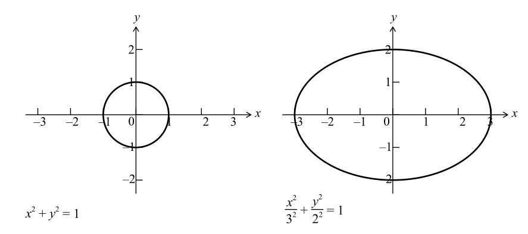
图5-10 圆和椭圆方程
1818年，法国数学家加布里埃尔·拉梅（Gabriel Lame）开始研究圆和椭圆的公式。他想知道，如果他调整的是指数或幂，而不是a和b的值，会怎么样。
这种调整的效果很有趣。例如，对于方程xn +yn =1，当n=2时，它就是单位圆。图5-11是当n=2、n=4和n=8时分别产生的曲线：
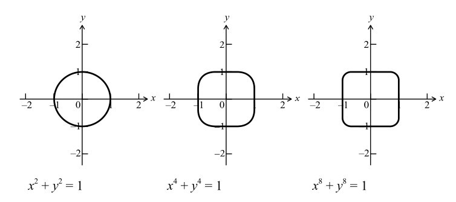
图5-11 调整指数，化圆为方
当n等于4时，曲线看起来像是被塞进方形盒子的法国牛奶软干酪的俯视图。它的侧面变平了，有四个圆角，就好像圆要变成正方形。当n等于8时，曲线变得更像一个正方形了。
事实上，你把n设置得越大，曲线就越接近正方形。在极限条件下，当x∞ +y∞ =1时，方程对应的图形就是一个正方形。（如果有什么东西可以被称为化圆为方，那肯定就是它了。）
同样的情况也发生在椭圆上。由（x/3）n +（y/2）n =1描述的椭圆，通过增加n的值，最终将变成一个长方形。
在斯德哥尔摩市中心有一个重要的公共广场，叫塞格尔广场。这是一个很大的长方形空间，下面一层是人行道，上面一层是环形交通枢纽。激进分子举行政治集会时会选这个地方，瑞典国家队赢得重大赛事时体育迷也会聚集在这里。广场的主要特点是，中心部分有一座20世纪60年代建造的坚固的雕塑，当地人对它又爱又恨，这座37米高、由玻璃和钢制成的方尖碑在晚上会亮起来。
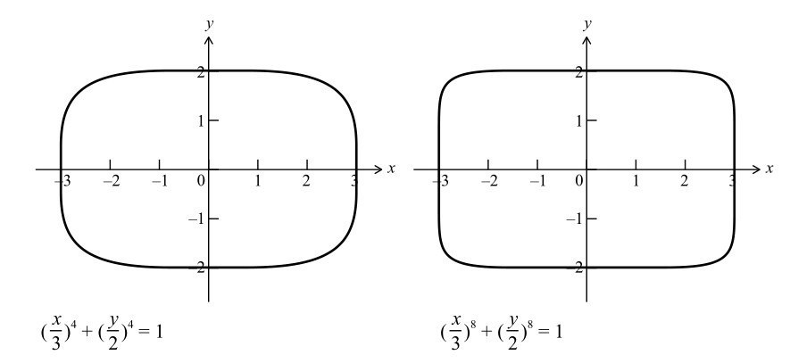
图5-12 调整指数，把椭圆变为长方形
20世纪50年代末，城市规划师在设计塞格尔广场时，遇到了一个几何问题。他们想知道，矩形空间中的环岛的最佳形状是什么。他们不想用圆形，因为这样就不能充分利用矩形空间。但他们也不想使用卵形或椭圆形，因为尽管这两种形状充分利用了空间，但它们的尖端都会阻碍交通的顺畅。为了寻找答案，项目的建筑师放眼海外，咨询了皮特·海因（Piet Hein），海因曾被视为丹麦的第三大名人（仅次于物理学家尼尔斯·玻尔和作家凯伦·布利克森）。皮特·海因是“格罗克”（grook）的发明者。格罗克这种格言短诗的风格，在第二次世界大战期间在丹麦出现，是一种对纳粹占领的消极抵抗。他也是一位画家和数学家，因此很好地结合了艺术情感、横向思维和科学理解，为斯堪的纳维亚的规划问题提供了新的思路。
皮特·海因的解决方案是用简单的数学方法，找到一个介于椭圆和矩形之间的形状。为了达到这个目的，他利用了前文描述的方法。他调整了椭圆方程中的指数，得到了一个适合塞格尔广场的形状。用代数术语来说，他做了和拉梅一样的事情，在椭圆方程中尝试不同大小的n：
（x/a）n +（y/b）n =1
如前面所说，把n从2增加到无穷大，就可以让一个圆变成正方形，或者让一个椭圆变成矩形。皮特·海因判断，让曲线在圆和直角之间达到最具美感的平衡的n值应当是n=2.5。他本可以把他创作的新形状称为“方圆形”（squircle），但他没有，而是称之为超椭圆（superellipse）。
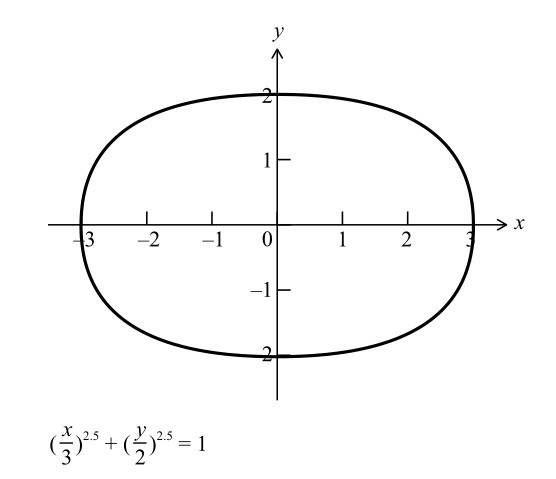
图5-13 超椭圆
皮特·海因的超椭圆不仅是一个优雅的数学作品，还触及了一个更深层次的人类主题，就是在我们周围始终存在的圆与直线之间的冲突。正如他所写，“整个文明模式中有两种倾向，一种倾向于直线和矩形，一种倾向于圆形线”。他在文章中接着说：“这两种倾向都有机械上和心理上的原因。用直线做出的东西很服帖，也节省空间。而用圆形线做的东西则很方便我们在周围移动（不管是在身体上还是精神上）。但是，如果我们不得不选择其中的一种，则通常中间形式会更好。超椭圆就解决了这个问题。它既不是圆形，也不是矩形，而是介于两者之间。但它是固定的，也是确定的，它有一种统一性。”
斯德哥尔摩的超椭圆环岛被其他建筑师仿效，最引人注目的是墨西哥城阿兹特克体育场的设计，这是1970年和1986年的世界杯决赛的举办地。皮特·海因的曲线还蔓延到了时尚界，成为20世纪70年代斯堪的纳维亚家具设计的特征之一。现在，你仍然可以从皮特·海因的儿子经营的公司购买到超椭圆形的盘子、托盘和门把手。
然而，皮特·海因灵活的头脑并没有止于超椭圆。他的下一步，是想知道超椭圆对应的三维形状会是什么样子，他得出的结果介于一个球体和一个盒子中间。他本可以称之为“球盒”（sphox），不过，他还是称它为“超级蛋”（superegg）。
超级蛋的一个意想不到的特点是，它可以竖着立起来，且不会倒下。20世纪70年代，皮特·海因把不锈钢制成的超级蛋作为一种“雕塑、创新或魅力”的象征。这是一种美丽而奇特的东西。我的壁炉架上有一个，尤里·盖勒（Uri Geller） [3] 也有一个，是约翰·列侬给他的，列侬解释说外星人拜访了他在纽约的公寓，并寄来了这个蛋。“你拿着吧，”列侬对盖勒说，“这对我来说太奇怪了。如果这是去另一个星球的票，我不想去那里。”
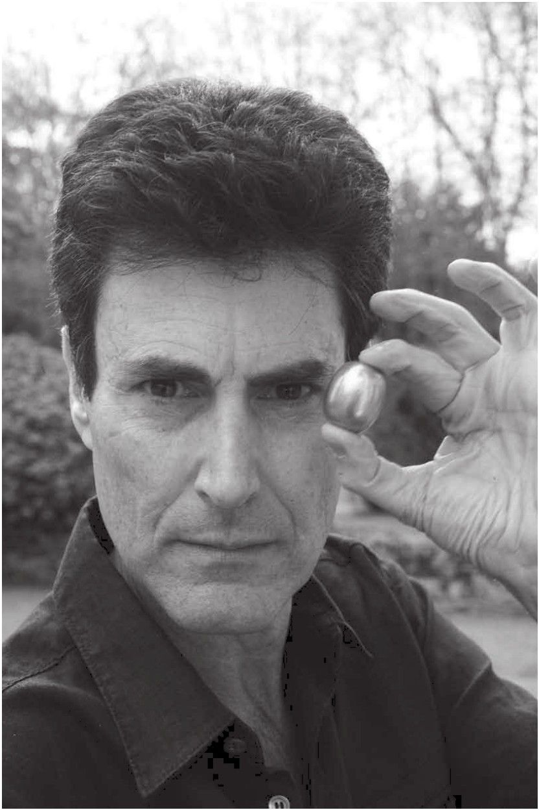
图5-14 超级蛋：尤里·盖勒
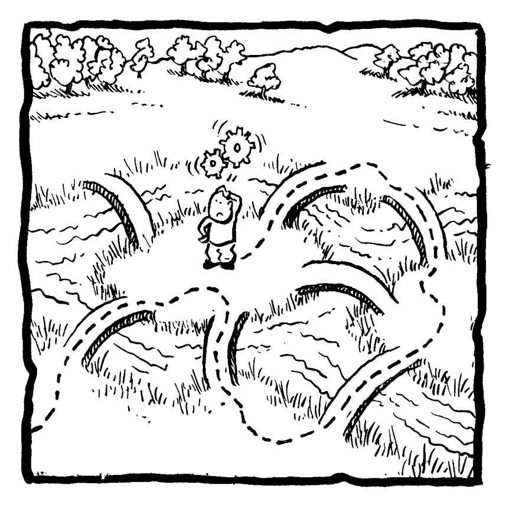
[1] X-factor（《英国偶像》）是英国一档选秀节目。——译者注
[2] 马尔科姆·埃克斯（Malcolm X）是一位美国非裔领袖。——译者注
[3] 尤里·盖勒是以色列传奇魔术师，最著名的表演是不借助外力把勺子变弯。——编者注